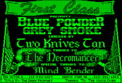
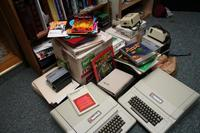

<html>
<title>T E X T F I L E S</title>
<BODY BGCOLOR="#000000" TEXT="#00FF00" LINK="#00FF00" ALINK="#00FF00" VLINK="#00FF00">
<CENTER>
<TABLE WIDTH=80%>
<TR><TD VALIGN=TOP ALIGN=RIGHT>
<FONT FACE="Courier New" COLOR="#33FF33">
<nobr><A style="text-decoration: none" HREF="index.html">INTRODUCTION</A>&nbsp;</nobr><BR>
<nobr><A style="text-decoration: none" HREF="jason.html">THE BBS YEARS</A>&nbsp;</nobr><BR>
<nobr><A style="text-decoration: none" HREF="internet.html">THE INTERNET</A>&nbsp;</nobr><BR>
<nobr><A style="text-decoration: none" HREF="textfiles.html">><B>TEXTFILES</B><</A>&nbsp;</nobr><BR>
<nobr><A style="text-decoration: none" HREF="today.html">10 YEARS</A>&nbsp;</nobr><BR>
</FONT>
<TD BGCOLOR="#00FF00">&nbsp;
<TD>
<blockquote>
<FONT FACE="Courier New" COLOR="#00FF00" size=+2>
<b>TEXTFILES</b>
</font>
<br>
<font face="Courier New" COLOR="#00FF00">
<small><i>In which a Website is Born</small></i>
<p>
Perhaps it seems strange considering how long ago this was, but to someone who'd come up through
BBSes and had spent five years watching the World Web Grow, it really felt like there wasn't anything
not on the Internet at that point. While archives were considered beyond belief if they measured in the
dozens of megabytes and search engines were the party of research projects and tech demos, I did feel
like everything was now online and I could find it.
<p>
I couldn't.
<p>
I couldn't find my old favorite BBS (Sherwood Forest II, 914-359-1517). I couldn't find any old text
files like the classics I'd considered BBS canon. In fact, I couldn't find much mention of BBSes as
a subject. I didn't find lists, or software, or any sort of hint that they'd ever been around anywhere
but in my own mind. It felt, to me, like they were lost, a part of history not lucky enough to be
around when the Internet hit its stride, and were going to be forgotten. That was a horrible thought.
<p>
(I must say, of course, that this would never have been the case; people would certainly have continued
to add computer history of all stripe to the Internet and time has borne out amazing collections of
computer and bulletin board system history for all to find. Work was being done before 1998 in this
area, but I, for all my belief in my abilities, could not find it. I felt alone, but was not, actually,
alone.) 
<p>
<hr width=100 color="#00FF00">
<p>
At the time, registering domains that included nouns was a bit more trivial than the present day; I
decided a website that would collect some of these old textfiles I'd kept on floppies all these years,
from the days before The Works and post-dating the life of my own BBS. Because it was available, I
registered <b>TEXTFILES.COM</b>. In one of those strange bits of history that hindsight would have
benefitted, I also registered <b>TEXTFILES.ORG</b> but chose to let that one lapse, thinking it wouldn't
have much purpose. I do regret that choice. TEXTFILES.COM it was, and I set to work finding my old 
collection of textfiles to put online.
<p>
<hr width=100 color="#00FF00">
<p>
Why green? Why long file directories? Why these strange classifications, this eclectic set of 
categories? What's up with a blinking GIF?
<p>
<a href="http://artscene.textfiles.com/intros/APPLEII/bpgsm.gif"></a>
Good questions, all. Not all of them I can answer with definition, of course, but good questions. 
Green, of course, was trying to harken back to a time of green monitors and lack of color, an era
I experienced via Apple II computers at my various schools and at friend's homes. The monitors that
Apple used had a quality to them, a glowing and sharp green, that has always struck me as pleasant.
Why I continue to think of this as a useful interface to the present day is beyond me, other than
how it tells you, in one swift glance, that you are seeing something from history, a history that is
limited technology compared to what you are now used to. It can predate variable-length text. It 
predates nearly unlimited columns on the screen. It definitely predates multi-user experiences that
we now consider mundane and the realm of the majority of computer entertainment. I feel it's a 
signifier, and it stays. 
<p>
The classifications and sometimes strange filenames are the products of a twelve year old. I came
up with my own classifying approach, out of my head, and that was what these files were placed
under. Over time, I allowed myself to think this was more effective than it was, and by the time
textfiles.com had come along, it seemed too much work to redo. So when a file's name ends in HUM
(humor) or PHK (Phreak), bear in mind that a very young upstart was behind them.
<p>
Advertising had not truly and completely infected the online experience, so I can't lay claim to
being ahead of my time or particularly principled in regards to access to the files. I simply
never liked banner ads when they were tacked onto the commercially-oriented sites and didn't have
an interest in adding them to my own site. I definitely didn't think much of Google Adsense when it
started providing text-based ads, even if I thought they had the potential to be less intrusive. I
guess it comes down to never wanting to make use of people as nickels and dimes, instead of just
letting them enjoy the place.
<p>
The site itself was (and is) a mass of directories, files by the <a href="http://www.textfiles.com/100">hundred</a>, selections and descriptions
written by myself over the course of months when I was in my late 20s. I began composing scripts
and <a href="http://www.textfiles.com/tools">tools</a> to assist me in describing them, and so I continued for a long, long time. When the site
opened, the files numbered in the thousands, an amazing size for the time and all of it was right
there, ready to be found. I wanted the feeling that people had when they came to my site to be the
same when I logged onto a BBS at 12: a sense of wonder, of opportunity, of so much to know that I
could never know it all but would instead dive into and soak in what I could. I've been given some
indication over the years that for at least a few people I was successful.
<p>
<hr width=100 color="#00FF00">
<p>
The website started getting attention almost immediately - people were excited to have all these
old BBS artifacts so easily found online. I got <a href="http://www.wired.com/culture/lifestyle/news/1999/03/18175">interviewed in the press</a>, was asked to <a href="http://audio.textfiles.com/speeches/">speak</a> at
the DEFCON security conference, and found myself in demand as a speaker. And then, as if this wasn't
enjoyable enough, people started contacting me about collections of textfiles they had been holding all
these years, and that they'd like to contribute to my archive. Thus began the process of collecting
at an even greater rate than I had before, and the journey I continue to this day.
<p>
<a href="http://album.textfiles.com/index.cgi?d=2007.03.15.APPLE&id=IMG_3728.JPG"></a>
I've been sent stacks of disks, CD-ROMs, even entire old computer systems. I've been mailed printouts,
advertisements, magazines, and hard drives. Folks who had been holding into this stuff for reasons they
couldn't quite explain had finally found someone who would respect and maintain their childhoods
and earlier lives. I started adding both these files (growing to tens of thousands of textfiles) and
began splitting off the site into even more subjects. First 
<a href="http://web.textfiles.com">web.textfiles.com</a> (textfiles after 1995), then collections
like <a href="http://artscene.textfiles.com">artscene.textfiles.com</a> and
<a href="http://audio.textfiles.com">audio.textfiles.com</a>. History wasn't just ASCII and textfiles,
after all: there were so many things to save, so much to keep. The site has grown exponentially, 
upwards of hundreds of gigabytes. Hard drive technology is keeping ahead of it, but sometimes I
wonder if it's a race to see how much I can save versus how much I can store.
<p>
As many as a half-million people visit a textfiles.com site in a given month. They never meet me, may
not know I'm the person behind it, may not even know why this file is where it is. They probably never
used a BBS, and probably don't care. But they come to this site and they're happy to pull from it
what they need at that point in their life, and I'm happy to provide it.
<p>
While many might not be aware, a percentage are more than aware of the history of the BBS and they
kneel at the pool of files and just lose themselves in them, clicking from memory to touchpoint to
surprising new perspective. I know this because of the thousands of fan letters I've gotten; the thank
yous, the questions, the testimonials to this era of the BBS.
<p>
<a href="http://album.textfiles.com/index.cgi?d=2003.01.CACHESWITCH&id=p1010012.jpg"></a>
I've naturally moved between a lot of different hosting providers over the years. They include the
Thomson Corporation, <http://www.dreamcom.net/">Dream Communications</a>, and currently <a href="http://www.tqhosting.com">TQ Hosting</a>. I've also kept it in my own basement when times have gotten rough, and I can assure you, they've
sometimes gotten rough indeed. When 800 gigabytes of data is in one place, something on there will
insult or offend somebody, somewhere, somehow. It's all part of the game, and a decade hasn't killed
me or the site yet.
<p>
<hr width=100 color="#00FF00">
<p>
<a href="http://www.bbsdocumentary.com"></a>
Probably the most radical change to my life was the bright idea in 2002 to capture even more of the
history of the BBS by doing a documentary. The 
<a href="http://www.bbsdocumentary.com">BBS Documentary</a> was a four year project that is still 
paying off, between friends made, things learned, and history saved. Hundreds of people were interviewed
and hundreds of hours filmed for it, and the resulting work has been downloaded or bought by thousands.
How could I have known how much would come of putting up my collection of textfiles back in 1998?
<p>
It has been a great life, so far.
<p>
<i>A toast to <a href="today.html">10 years</a> ....</i>
<P>
</FONT>
</blockquote>
</TD></TR>
</TABLE>
</CENTER>
</BODY>
</HTML>
